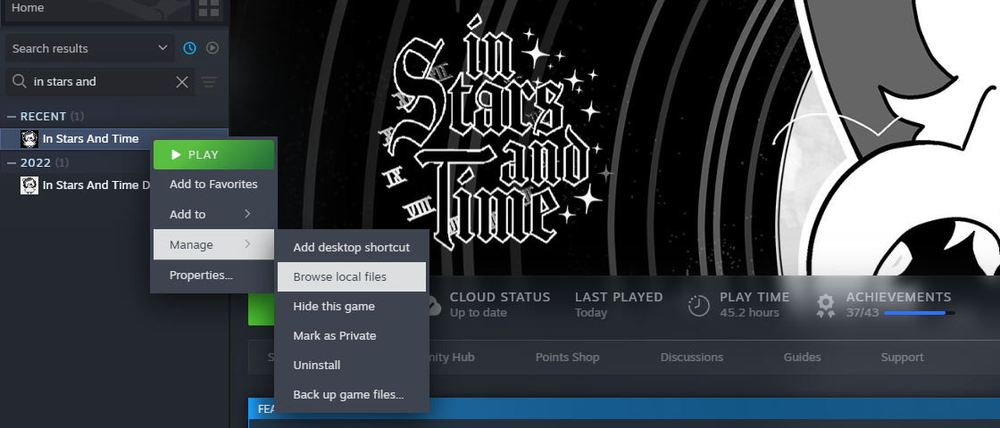

In Stats And Time! (by ITR)
Follow these steps to locate your save folder for In Stars And Time:
- Go to your Steam Library and find In Stars And Time.
- Right-click the game and select Manage, and click Browse Local Files.
- Navigate to the
www/save folder and select File1.rpgsave (or whichever number you have).
